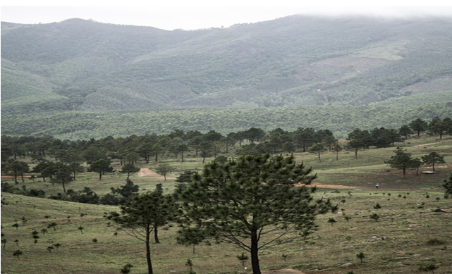

maumbo ya sura ya nchi ili tuweze kuhusiana nayo kwa njia ambayo ni endelevu.
Kazi ya kufanya namba 1
1. Chunguza Kielelezo namba 1, kisha bainisha maumbo ya sura ya nchi yaliyopo katika kielelezo hicho.

Kielelezo namba 1: Maumbo mbalimbali ya sura ya nchi
2. Chunguza na eleza maumbo ya sura ya nchi yaliyopo katika mazingira unayoishi.
Maumbo makuu ya sura ya nchi
Kazi ya kufanya namba 2
Tumia vyanzo vya mtandaoni kutafuta video zinazohusu maumbo makuu ya sura ya nchi ya Tanzania.
Angalia au sikiliza video hizo kisha, andika ufupisho.